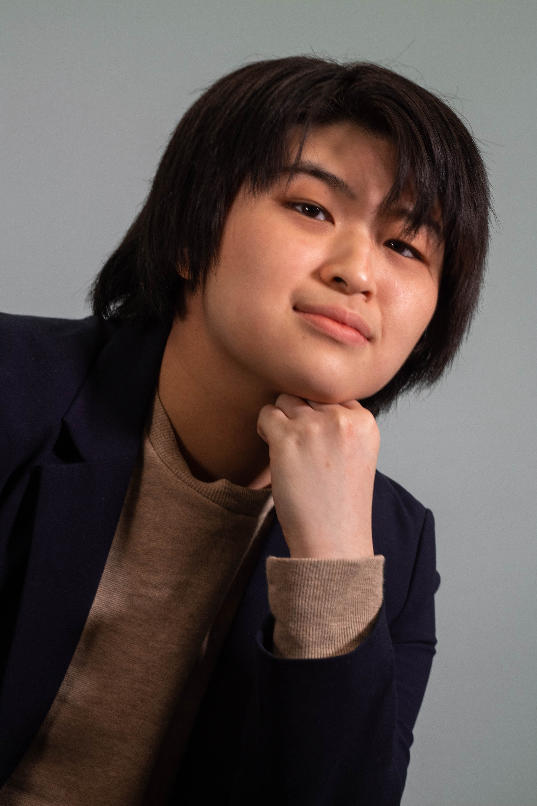
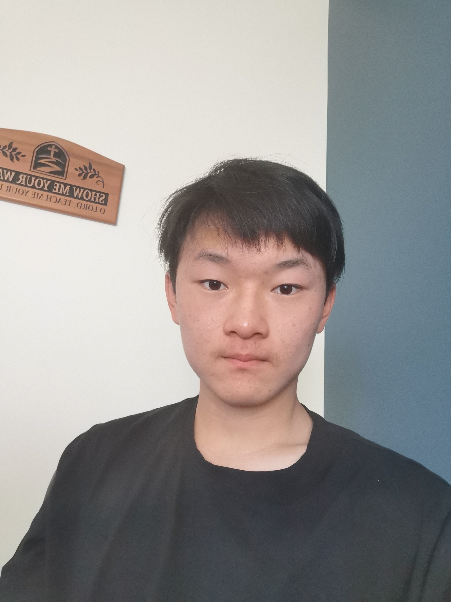

Meet our Speakers!
Nelli Warren

Nelli Warren is a highly effective educator, based in Surrey, BC, who has empowered both students and teachers alike. Her extensive knowledge and methodological approach as an English teacher have enabled students from the Tri Cities and Fraser Valley areas to achieve extraordinary results, both in the classroom and the BC Provincial English Exam. Nelli has also helped many teachers create innovative classroom instruction that still conforms to the framework of the BC Ministry of Education’s Performance Standards.
Janette Kim
Janette is an upcoming junior @UBC dual specializing in business technology management and operations logistics with a stream in business analytics at the Sauder School of Business. Currently, she is currently interning as a Salesforce Consultant @Traction on Demand and has a media start-up called Tech Pod on LinkedIn! During her tenure at Pacific Academy, Janette was extremely invested in her community and was involved in a variety of extracurriculars such as Model United Nations (15+ conferences), non-profits, business competitions, and received the 2019 graduation's class Governor General's Award. Janette is super excited to be invited to Pacific Academy's first TedxYouth event and cannot wait to share the challenges she has overcome and lessons she has learned along the way to bridge the gap between happiness and success :).
Jacqueline Liu
Jacqueline is currently pursuing her Bachelor of Architecture degree with a minor in Real Estate Finance at the University of Southern California in Los Angeles. From an early age, she discovered her strong passion and curiosity for architecture and design. She believes that architecture and design has the responsibility to generate value for society by creating meaningful experiences. To her, architecture is not only a building or structure, but also has a deeper mission to bridge gaps, connect people, and provide innovative solutions to many of the challenges that society faces. Jacqueline has previously gained experience as an intern architectural designer at award-winning firms MAD Architects in Beijing, China, and Revery Architecture in Vancouver, Canada, and has further explored her interest in real estate development by gaining experience on the Design and Development team at Westbank Corp. in Vancouver, Canada. Extremely honored and ecstatic to attend this TEDx event, Jacqueline hopes to inspire the audience by sharing her path to discovering the beauty and appreciation for architecture.
Juliana Manalo
Juliana is an incoming Grade 12 in Holy Cross Regional High School. As the founder of the Vancouver Kindness Movement, Juliana organizes shoreline clean-ups, donation drives, and hosts online workshops to raise awareness with the youth on the necessity of kindness in the world. She has a passion for music: Juliana sings soprano and plays the piano and the trumpet for her school's Concert Choir, Jazz Choir, Jazz Band, and Wind Ensemble. She also sings in the Vancouver Youth Choir. In her spare time, Juliana enjoys photography, video editing, and creating digital art. Through her hobbies and passions in business, she organized a Canada-wide virtual choir and band ensemble called Melodies of Youth. The purpose of this initiative was to raise funds for the benefit of Covenant House Vancouver. In total, the ensemble had over 40+ musicians all across the provinces of Canada. For fun, Juliana plays on her school's volleyball team and is an enthusiastic player on its ultimate frisbee squad. She loves ramen and boba, sometimes at the same time. She invariably breaks out into song when she is relaxed; her family is used to it by now.
Evan Huang
Evan is a second-year student at Simon Fraser University. He graduated from Pacific Academy with an IB diploma and is currently studying Interactive Arts and Technology at SFU. Evan is passionate about audio and visual media, especially when it involves film or 3D computer graphics. He currently works alongside his studies as an audio engineer but is aiming for a career related to 3D art and animation. In his free time, you may find him editing videos, tinkering with Blender, or making music in his home recording studio.
Rena Su
Rena Su is a student in Pacific Academy’s class of 2022. Her writing has been internationally recognized and is published by over 20 publications including Pulitzer Center, Scholastic Art and Writing, and Asian American Writers Workshop. At age 16, she received a publication deal for her poetry collection Preparing Dinosaurs for Mass Extinction. As a competitive debater, she is also the co-founder of Equal Proposition — an online resource database that promotes debate accessibility. She also mentors students in art and writing, volunteers in her community, and cold-emails with major audacity.
Joseph Zhang
Joseph is a highschool student attending Pacific Academy for education. He loves to socialize in order to understand others and more about the world. One of the things he has learned throughout his many experiences is that, humans were not created to be independent. We need people around us to support, encourage, and experience life with.
Keith Nath
Keith Nath grew up in East Vancouver, in a single parent home, with tough beginnings. Eventually he would find his way with basketball, which would play a large role in his life. Shortly after his university basketball career, Keith found himself working in the East Vancouver community coaching Youth Sports and working as a Programmer for the Vancouver School Board. After 8 amazing years, Keith transitioned to ministry and non-profit work. Keith is passionate about helping young people in the community achieve their goals and being a mentor to the next generation. He has had the opportunity to speak at multiple TEDx events, and loves to inspire people to be their best!